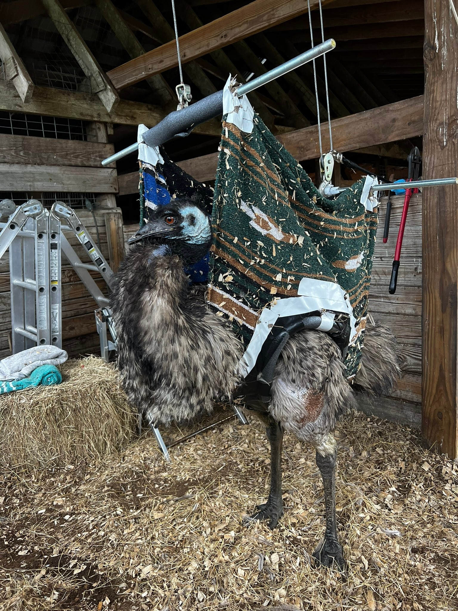
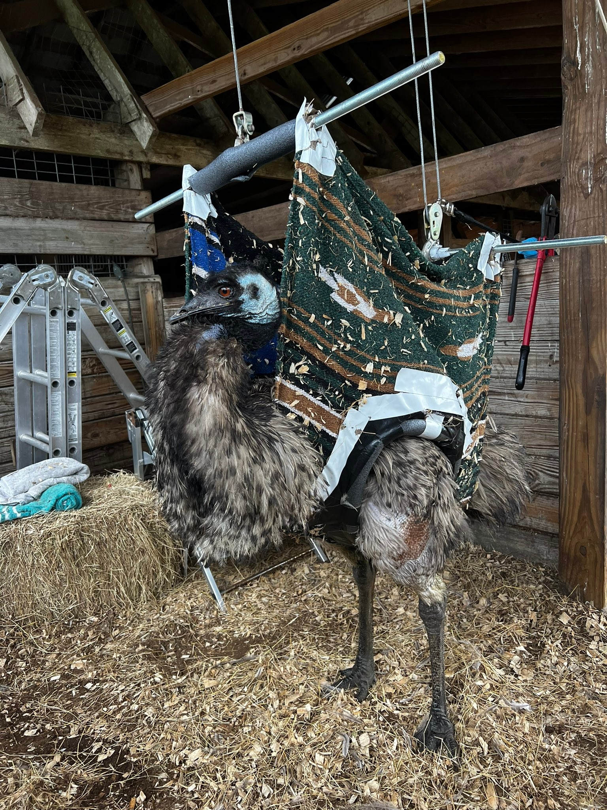
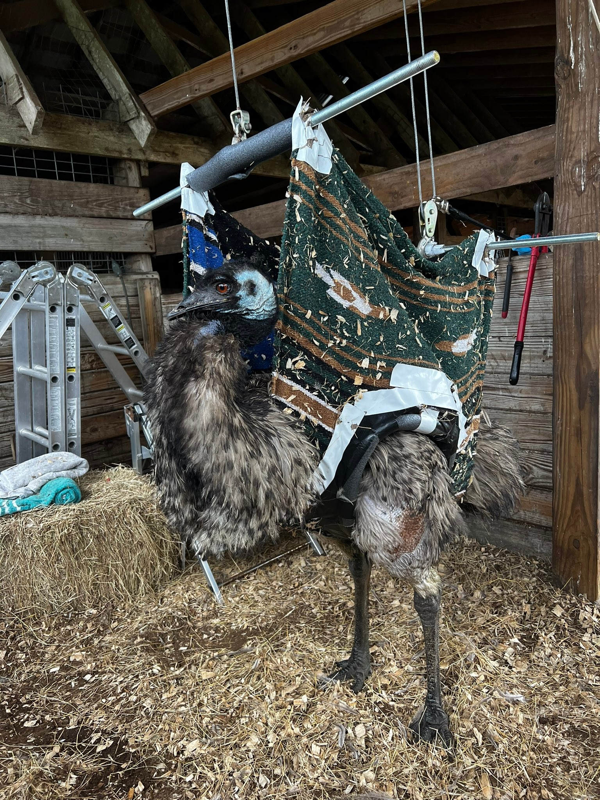

Emu Chick Gallery
 

Fast nationwide delivery. Expert care. Verified trade. Beautiful birds ready for your farm!
Emu chicks are fascinating creatures known for their rapid growth, gentle nature, and strong adaptability to various climates across the United States. At Emu Chicks USA, we provide only the best-bred chicks that come from healthy parent birds raised in USDA-monitored farms. Our emu chicks are ideal for both new and seasoned bird farmers looking to expand their livestock with a unique, high-value species. Our birds are resilient, requiring simple yet attentive care. They thrive in both small farms and large ranches, and their commercial value—ranging from meat, oil, eggs, and leather—makes them an excellent investment. We assist clients in selecting the right age of chick to begin with, depending on their goals and setup, and offer expert consultation at every step.
We offer healthy, USA-bred emu chicks raised with professional care. Each chick is delivered with a certificate of health and is eligible for trade in all 50 states.
A: Emu eggs typically take around 48-56 days to hatch under proper incubation conditions.
A: It’s not advised. Emu chicks need constant warmth, food, and supervision, especially in the first few weeks.
A: Ensure the temperature is optimal, try moistening feed with warm water, and consult a vet if the issue persists.
A: Emu chicks can be vocal, especially when hungry or distressed. Their calls are usually chirps and peeps.

Raising emu chicks requires attention to temperature, nutrition, and environment. From birth to six weeks, chicks must be housed in a warm, dry brooder with a non-slip floor to prevent leg injuries. The temperature should be kept at 90–95°F during the first week and gradually decreased by 5°F each week until the chick is fully feathered. Use a starter feed specifically formulated for ratites or game birds, with at least 20–24% protein, to support their rapid growth. Provide fresh water at all times in a shallow dish to prevent drowning. Emus are naturally curious, so enrich their brooder with hay, safe toys, and small obstacles to promote mobility and mental engagement. As they grow, transfer them into a predator-proof outdoor run where they can exercise and begin grazing. Emus eat a mix of pellets, grains, leafy greens, and even fruits in moderation. A balanced diet and regular handling result in docile, friendly adults. Routine health checks, deworming, and parasite prevention are recommended every few months.
Feed your emu chicks a high-protein starter feed (20-24% protein). Keep their brooder between 85-95°F for the first two weeks. Provide fresh water and space to move around daily.
All chicks are shipped via USDA-certified transporters with same-day dispatch. Tracking and delivery guarantee included.
Jane, TX: “Absolutely perfect! Healthy and active chicks.” – 247 Likes
Mike, FL: “Fast shipping and great support. Highly recommend.” – 189 Likes
Emu chicks are native to Australia and are raised for their meat, oil, and leather. They require a warm, safe environment with plenty of space to roam. Emus grow quickly and need access to clean water and a balanced diet including grains, greens, and formulated poultry feed.
We ship across all 50 states in the USA. All emu chicks and eggs are carefully packed in ventilated boxes with health certification. Delivery options include next-day or 2-day shipping, and real-time tracking is provided for every order.
We are USA Verified for livestock trading. Our site is encrypted with SSL, and we use trusted third-party services for all transactions. Data privacy and customer safety are our priorities.
A: A balanced diet including starter poultry feed, fresh greens, and clean water is essential.
A: Keep them warm (90-95°F) and dry in a brooder. Avoid slippery surfaces to prevent leg issues.
A: Yes, we ship fresh, fertile eggs for hatching and eating. Hatching eggs are $35 each; eating eggs are $20.